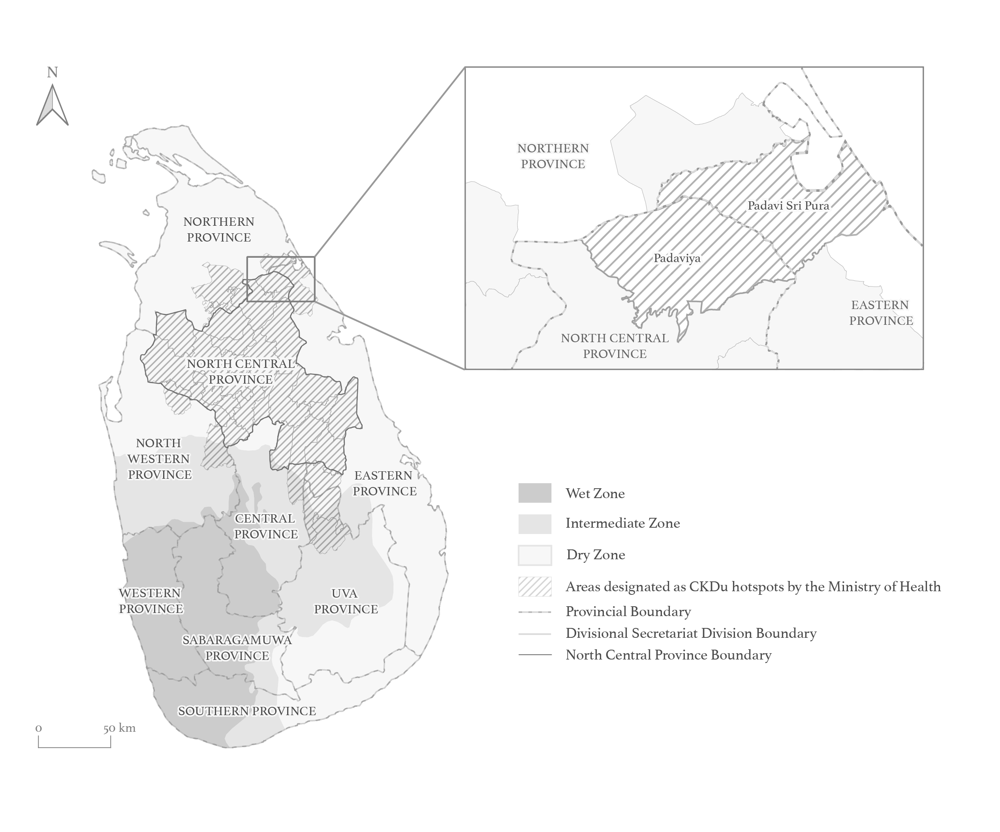
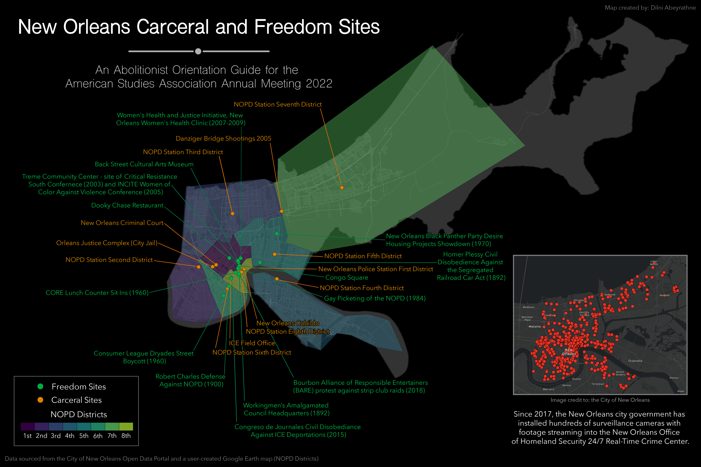
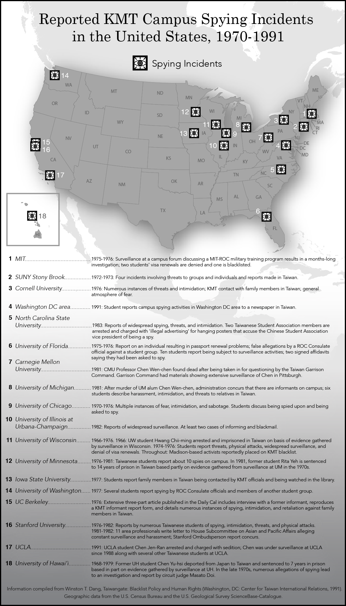

A map made in 2021 for Dr. Nari Senanayake's publication depicting hotspots of chronic kidney disease of unknown etiology (CKDu) in comparison to agro-ecological zones in Sri Lanka.
A map made in 2022 for Dr. Lydia Pelot-Hobbs illustrating carceral and freedom sites in the city of New Orleans.
A map made in 2023 for Dr. Wendy Cheng decpicting spying incidents in U.S. universities from 1970-1991.
